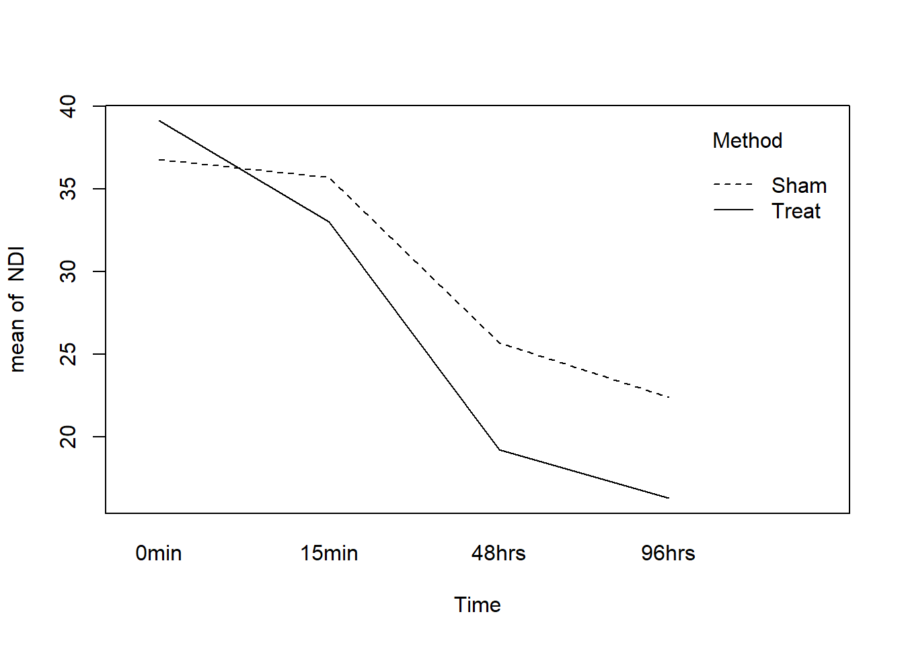

set.seed(1)
nPerGroup <- 10
nTime <- 4
muTreat <- c(37, 32, 20, 15)
muSham <- c(37, 32, 25, 22)
stdevs <- c(12, 10, 8, 6)
stdiff <- 9
nSim <- 500Background
One of my colleagues is an academic physical therapist (PT), and he’s working on a paper to his colleagues related to power, sample size, and navigating the thicket of trouble that surrounds those two things. We recently got together to walk through some of the issues, and I thought I would share some of the wildlife we observed along the way. If you just want the code and don’t care about the harangue, see this gist on GitHub.
The problem
Suppose you are a PT, and you’ve come up with a brand new exercise method that you think will decrease neck pain, say. How can you demonstrate that your method is effective? Of course, you collect data and show that people using your method have significantly lower neck pain than those from a control group.
The standard approach in the PT literature to analyze said data is repeated measures ANOVA. (Yes, those guys should really be using mixed-effects models, but those haven’t quite taken off yet.) There are two groups: the “Treatment” group does your new exercise method, and a “Sham” group does nothing (or just the placebo exercise method). For each Subject, you measure their pain at time 0, 15 minutes, 48 hours, and 96 hours. Pain is measured by an index (there are several); the one we’re using is something called NDI, which stands for “Neck Disability Index”. The index ranges from 0 to 100 (more on this later). There is some brief information about the index here.
Now comes the question: how many people should you recruit for your study? The answer is: it depends. “On what?” Well, it depends on how good the statistical test is, and how good your method is, but more to the point, it depends on the effect size, that is, how far apart the two groups are, given that the method actually works.
I encounter some variant of this question a lot. I used to go look for research papers where somebody’s worked out the F-test and sample sizes required, and pore over tables and tables. Then I resorted to online calculators (the proprietary versions were too expensive for my department!), which are fine, but they all use different notation and it takes a lot of time poring through documentation (which is often poor, pardon the pun) to recall how it works. And I was never really sure whether I’d got it right, or if I had screwed up with a parameter somewhere.
Some of the calculators advertise Cohen’s effect sizes, which are usually stated something like “small”, “medium”, and “large”, with accompanying numerical values. Russell Lenth calls these “T-shirt effect sizes”. I agree with him.
Nowadays the fashionable people say, “Just run a simulation and estimate the power,” but the available materials online are scantly detailed. So my buddy and I worked it all out from start to finish for this simple example, in the hopes that by sharing this information people can get a better idea of how to do it the right way, the first time.
How to attack it
The avenue of attack is simple: for a given sample size,
- use prior research and practitioner experience to decide what difference would be “meaningful” to detect,
- simulate data consistent with the above difference and run the desired statistical test to see whether or not it rejected, and
- repeat step 2 hundreds of times. An estimate of the power (for that sample size) is the proportion of times that the test rejected.
If the power isn’t high enough, then increase the given sample size and start over. The value we get is just an estimate of the power, but we can increase the precision of our estimate by increasing the number of repetitions in step 3.
What you find when you start down this path is that there is a lot of information required to be able to answer the question. Of course, this information had been hiding behind the scenes all along, even with those old research papers and online calculators, but the other methods make it easy to gloss over the details, or they’re so complicated that researchers will give up and fall back to something like Cohen’s T-shirt effect sizes.
Now for the legwork
The details we need include: A) prior knowledge of how average pain decreases for people in the Sham group, B) some idea about the variability of scores, C) how scores would be correlated with one another over time, and D) how much better the Treat group would need to be in order for the new procedure to be considered clinically meaningful.
As a first step, the PT sat down and filled in the following table.
| 0 hrs | 15 min | 48 hrs | 96 hrs | |
|---|---|---|---|---|
| Treat | 37 | 32 | 20 | 15 |
| Sham | 37 | 32 | 25 | 22 |
All of the entries in the above table represent population mean NDI scores for people in the respective groups at the respective measurement times, and were filled in based on prior research and educated guesses by the PT. It was known from other studies that NDI scores have a standard deviation of around 12, and those have been observed to decrease over time.
Note: we could have assumed a simpler model for the means. For example, we could have assumed that mean NDI was linear, with possibly different slopes/intercepts for the Treat/Sham groups. Prior info available to the PT said that such an assumption wasn’t reasonable for this example.
Repeated measures designs assume sphericity for the exact F tests to hold, so we need to specify a variance for the differences, \(\mathrm{Var}(X_{i} - X_{j})\), and sphericity says this variance should be the same for all time points \(i\) and \(j\). As it turns out, this last choice implicitly determines all of the remaining covariance structure. We set this standard deviation to \(9\).
Finally we do some coding
We are now ready to turn on the computer. We first intialize the parameters we’ll need, next we set up the independent variable data, then we do the simulation, and finally we rinse-and-repeat. Let’s go.
All of the above should be self-explanatory. Next comes setting up the data - creatively named theData - for the independent variables. Just for the sake of argument I used code to generate the data frame, but we wouldn’t have had to. We could have imported an external text file had we wished.
Subject <- factor(1:(nPerGroup*2))
Time <- factor(1:nTime, labels = c("0min", "15min", "48hrs", "96hrs"))
theData <- expand.grid(Time, Subject)
names(theData) <- c("Time", "Subject")
tmp <- rep(c("Treat", "Sham"), each = nPerGroup * nTime)
theData$Method <- factor(tmp)Again, the above should be self-explanatory for the most part. The data are in “long” form, where each subject appears over multiple rows. In fact, let’s take a look at the data frame to make sure it looks right.
head(theData) Time Subject Method
1 0min 1 Treat
2 15min 1 Treat
3 48hrs 1 Treat
4 96hrs 1 Treat
5 0min 2 Treat
6 15min 2 TreatLookin’ good. Now for the fun part. We generate the single remaining column, the NDI scores. The repeated measures model is multivariate normal. The population covariance matrix is a little bit tricky, but it’s not too bad and to make things easy we’ll assume both groups have the same covariance. See the original paper by Huynh and Feldt for details.
# to set up variance-covariance matrix
ones <- rep(1, nTime)
A <- stdevs^2 %o% ones
B <- (A + t(A) + (stdiff^2)*(diag(nTime) - ones %o% ones))/2We simulate with the mvrnorm function from the MASS package.
library(MASS)
tmp1 <- mvrnorm(nPerGroup, mu = muTreat, Sigma = B)
tmp2 <- mvrnorm(nPerGroup, mu = muSham, Sigma = B)
theData$NDI <- c(as.vector(t(tmp1)), as.vector(t(tmp2)))Now that we have our data, we can run the test:
aovComp <- aov(NDI ~ Time*Method + Error(Subject/Time), theData)
summary(aovComp)
Error: Subject
Df Sum Sq Mean Sq F value Pr(>F)
Method 1 207.2 207.2 1.896 0.185
Residuals 18 1967.5 109.3
Error: Subject:Time
Df Sum Sq Mean Sq F value Pr(>F)
Time 3 4871 1623.5 42.709 2.79e-14 ***
Time:Method 3 251 83.7 2.201 0.0985 .
Residuals 54 2053 38.0
---
Signif. codes: 0 '***' 0.001 '**' 0.01 '*' 0.05 '.' 0.1 ' ' 1Terrific! For these data, we observe a highly significant Time effect (this should be obvious given our table above), an insignificant Method fixed effect, and an insignificant Time:Method interaction. If we think about our model and what we’re interested in, it’s the interaction which we care about and that which we’d like to detect. If our significance level had been \(\alpha = 0.05\), we would not have rejected this time, but who knows what would happen next time.
Now it’s time to rinse-and-repeat, which we accomplish with the replicate function. Before we get there, though, let’s look at a plot. There are several relevant ones, but in the interest of brevity let’s satisfy ourselves with an interaction.plot:
with(theData, interaction.plot(Time, Method, NDI))
Everything is going according to plan. There is definitely a Time effect (the lines both slope downward) but there isn’t any evidence of an interaction (the lines have similar slopes).
On to rinse-and-repeat, we first set up the function that runs the test once:
runTest <- function(){
tmp1 <- mvrnorm(nPerGroup, mu = muTreat, Sigma = B)
tmp2 <- mvrnorm(nPerGroup, mu = muSham, Sigma = B)
theData$NDI <- c(as.vector(t(tmp1)), as.vector(t(tmp2)))
aovComp <- aov(NDI ~ Time*Method + Error(Subject/Time), theData)
b <- summary(aovComp)$'Error: Subject:Time'[[1]][2,5]
b < 0.05
}and finally do the repeating:
mean(replicate(nSim, runTest()))[1] 0.346Whoa! The power is 0.372? That’s pretty low. We recall that this is just an estimate of power - how precise is the estimate? The standard error of \(\hat{p}\) is approximately \(\sqrt{\hat{p}(1-\hat{p})/n}\), so in our case, our estimate’s standard error is approximately 0.022. That means we are approximately 95% confident that the true power at this particular alternative is covered by the interval \([0.329,0.415]\).
Standard practice is to shoot for a power of around \(\beta = 0.80\), so our power isn’t even close to what we’d need. We can increase power by increasing sample size (the parameter nPerGroup). A larger sample size means a longer time needed to run the simulation. Below are some results of running the above script at assorted sample sizes.
nPerGroup |
Power (estimate) | SE (approx) |
|---|---|---|
| 10 | 0.372 | 0.022 |
| 20 | 0.686 | 0.021 |
| 30 | 0.886 | 0.014 |
Now we’re talking. It looks like somewhere between 20 and 30 subjects per group would be enough to detect the clinically meaningful difference proposed above with a power of 0.80.
Unfortunately, the joke is on us. Because, as it happens, it’s no small order for a lone, practicing PT (around here) to snare 60 humans with neck pain for a research study. A person would need to be in (or travel to) a heavily populated area, and even then there would be dropout, people not showing up for subsequent appointments.
So what can we do?
- Modify the research details. If we take a closer look at the table, there isn’t an expected difference in the means until 48 hours, so why not measure differently, say, at 0, 48, 96, and 144 hours? Is there something else about the measurement process we could change to decrease the variance?
- Use a different test. We are going with boilerplate repeated-measures ANOVA here. Is that really the best choice? What would happen if we tried the mixed-effects approach?
- Take a second look at the model. We should not only double-check our parameter choices, but rethink: is the repeated-measures model (multivariate normal) the most appropriate? Is it reasonable for the variance of differences at all time pairs to be identical? What about the covariance structure? There are others we could try, such as an autoregressive model (another arrow in the mixed-effects models’ quiver).
Other things to keep in mind
- This example is simple enough to have done analytically; we didn’t have to simulate anything at all.
- Even if the example hadn’t been simple, we could still have searched for an approximate analytic solution which, if nothing else, might have given some insight into the power function’s behavior.
- We could have adjusted all the means upward by 7 and nothing would have changed. We based our initial values on literature review and clinical expertise.
- We didn’t bother with contrasts, functional means, or anything else. We just generated data consistent with our null and salient alternative and went on with our business.
- We could have used whatever test we liked yet the method of attack would have been the same. Multiple comparisons, nested tests, nonparametric tests, whatever. As long as we include the full procedure in
runTest, we will get valid estimates of power for that procedure at that alternative. - We need to be careful that the test we use (whatever it is) has its significance level controlled. This is easy to check in our example. We can set the means equal (
muTreat = muSham) and run the simulation. We should get a power equal to 0.05 (within margin of error). Go ahead, check yourself. In fact, since we only care about the interaction, we could vertically offset the means by any fixed number, not necessarily zero. - Had we not been careful with our
stdevs, our simulated NDIs would have gone negative, particularly at the latter time points. That would not have been reasonable since NDI is nonnegative. - Simulation is not a silver bullet.
- Effective simulation requires substantial investment of thought into both the probability model and the parameter settings.
- Our model had 13 parameters, and we had 4 more we didn’t even touch[fn:1]. A person could be forgiven for wondering how in the world all of those parameters can be expressively spun into a T-shirt effect size. (They can’t.)
- The complexity can get out of control quickly. Simulation run times can take forever. The more complicated the model/test the worse it gets.
- Informative simulation demands literature review and content expertise as a prerequisite. Some researchers are unable (due to lack of existing/quality studies) or unwilling (for all sorts of reasons, not all of which are good) to help the statistician fill in the details. For the statistician, this is a problem. If you don’t know anything, then you can’t say anything.
- We can address uncertainty in our parameter guesses with prior distributions on the parameters. This adds a layer of complexity to the simulation since we must first simulate the parameters before simulating the data. Sometimes there’s no other choice.
- Theory tells us that the standard research designs (including our current one) can usually be re-parameterized by a single non-centrality parameter which ultimately determines the power at any particular alternative. Following our nose, it suggests that our problem is simpler than we’re making it, that if we would just write down the non-centrality parameter (and the right numerator/denominator degrees of freedom), we’d be all set. Yep, we would. Good luck with all… that.
[fn:1] John von Neumann once said, “With four parameters I can fit an elephant, and with five I can make him wiggle his trunk.”
References
See this question on CrossValidated which came up while I was working on this document (I might not have answered so quickly otherwise). Thanks to all who contributed to that discussion.
Conditions Under Which Mean Square Ratios in Repeated Measurements Designs Have Exact F-Distributions. Huynh Huynh and Leonard S. Feldt, Journal of the American Statistical Association, Vol. 65, No. 332 (Dec., 1970), pp. 1582-1589, stable link.
I found this website while preparing for the initial meeting and got some inspiration from the discussion near the middle.
There are several papers on Russell Lenth’s webpage which are good reading.
I also like this paper. Keselman, H. J., Algina, J. and Kowalchuk, R. K. (2001), The analysis of repeated measures designs: A review. British Journal of Mathematical and Statistical Psychology, 54: 1–20. doi: 10.1348/000711001159357
Many of the concepts above are explained more formally in my Statistical Computing course which you can get on GitHub.
To learn more about Monte Carlo methods with R I recommend Introducing Monte Carlo Methods with R by Robert and Casella. I also like Statistical Computing with R by Rizzo which has a section about simulating power of statistical tests.
For the record, here is my
sessionInfo.
sessionInfo()R version 4.2.2 (2022-10-31 ucrt)
Platform: x86_64-w64-mingw32/x64 (64-bit)
Running under: Windows 10 x64 (build 19044)
Matrix products: default
locale:
[1] LC_COLLATE=English_United States.utf8
[2] LC_CTYPE=English_United States.utf8
[3] LC_MONETARY=English_United States.utf8
[4] LC_NUMERIC=C
[5] LC_TIME=English_United States.utf8
attached base packages:
[1] stats graphics grDevices datasets utils methods base
other attached packages:
[1] MASS_7.3-58.1
loaded via a namespace (and not attached):
[1] digest_0.6.30 lifecycle_1.0.3 jsonlite_1.8.3 magrittr_2.0.3
[5] evaluate_0.18 rlang_1.0.6 stringi_1.7.8 cli_3.4.1
[9] renv_0.16.0 vctrs_0.5.1 rmarkdown_2.18 tools_4.2.2
[13] stringr_1.5.0 glue_1.6.2 xfun_0.35 yaml_2.3.6
[17] fastmap_1.1.0 compiler_4.2.2 htmltools_0.5.3 knitr_1.41